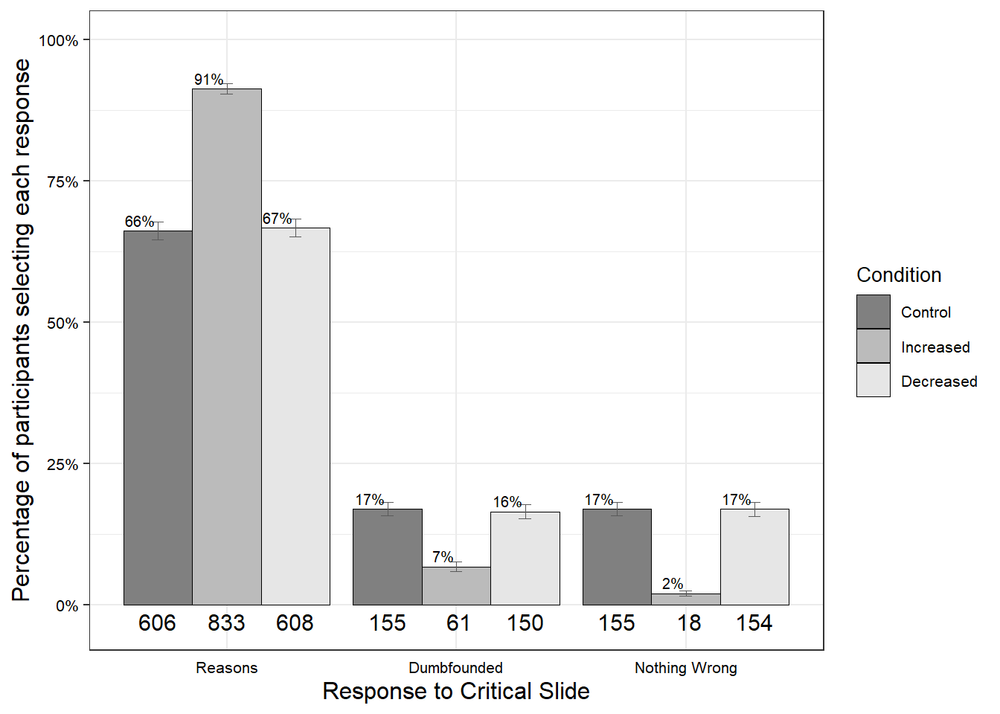

control future now
other 800 800 800
self 800 800 800Sample and Simulated Data
Analysis of Simulated Data
The following is a sample analysis using a simulated data set. This simulated data set contains N = 4800 participants. This sample size was chosen in order for at least 400 participants at each level of the temporal distance IV when analysing the scenarios separately (i.e., aiming for n = 1200 per scenario). This sample size will also allow for the detection of a medium effect in the combined analysis on the entire sample.
Temporal Distancing and Dumbfounding

Overview of Judgments
Three thousand Four hundred Two participants (70.88%) rated the behavior of Julie and Mark as wrong initially, and three thousand three hundred Seventeen participants (69.1%) rated the behavior as wrong at the end of the task. There was a significant difference between initial ratings (M = 3.3, SD = 1.3) and revised ratings (M = 3.3, SD = 1.4), t(4799) = -1.96, p = .049, d = 0.03.
Distancing and Judgments Made
There was no difference in initial judgement depending on distance manipulation: F(2, 4797) = 1.68, p = .187 \(\eta\)p2 = 0.001, (Mincreased = 3.3, SDincreased = 1.3, Mdecreased = 3.3, SDdecreased = 1.3, Mcontrol = 3.3, SDcontrol = 1.3). There was no difference in revised judgement depending on distance manipulation: F(2, 4797) = 0.24, p = .783, \(\eta\)p2 = 0, (Mincreased = 3.3, SDincreased = 1.4, Mdecreased = 3.3, SDdecreased = 1.4, Mcontrol = 3.4, SDcontrol = 1.4).
Distancing and Reason-Giving/Dumbfounding
There was a significant association between temporal distance condition and response to the critical slide, \(\chi\)2(4, N = 4800) = 89.11, p < .001, V = 0.14, the observed power was 1. The responses to the critical slide for the increased distance group (N = 1600) the decreased distance group (N = 1600), and the control group (N = 1600) are displayed in {apafg-tempoverall}.
| Control | Increased | Decreased | ||
|---|---|---|---|---|
| Observed count | Reasons | 1098 | 1095 | 1014 |
| Dumbfounded | 229 | 112 | 146 | |
| Nothing Wrong | 273 | 393 | 440 | |
| Expected count | Reasons | 1069 | 1069 | 1069 |
| Dumbfounded | 162.33 | 162.33 | 162.33 | |
| Nothing Wrong | 368.67 | 368.67 | 368.67 | |
| Standardised residuals | Reasons | 1.89 | 1.69 | -3.58** |
| Dumbfounded | 6.76** | -5.1** | -1.66 | |
| Nothing Wrong | -6.96** | 1.77 | 5.19** |
Note. * = sig. at < .05; ** = sig. at < .001
Psychological Distancing and Dumbfounding

Overview of Judgments
Three thousand Four hundred Two participants (70.88%) rated the behavior of Julie and Mark as wrong initially, and three thousand three hundred Seventeen participants (69.1%) rated the behavior as wrong at the end of the task. There was a significant difference between initial ratings (M = 3.3, SD = 1.3) and revised ratings (M = 3.3, SD = 1.4), t(4799) = -1.96, p = .049, d = 0.03.
Distancing and Judgments Made
There was no difference in initial judgement depending on distance manipulation: t(4791.08) = 1.12, p = .262, d = 0.03, (Mincreased = 3.3, SDincreased = 1.3, Mdecreased = 3.3, SDdecreased = 1.3). There was no difference in revised judgement depending on distance manipulation: t(4797.36) = -0.58, p = .565, d = 0.02, (Mincreased = 3.3, SDincreased = 1.4, Mdecreased = 3.4, SDdecreased = 1.4).
Distancing and Reason-Giving/Dumbfounding
There was a significant association between temporal distance condition and response to the critical slide, \(\chi\)2(2, N = 4800) = 20.906, p < .001, V = 0.07, the observed power was 0.98. The responses to the critical slide for the increased distance group (N = 2400) and the decreased distance group (N = 2400) are displayed in {apafg-psychoverall}.
| Increased | Decreased | ||
|---|---|---|---|
| Observed count | Reasons | 1673 | 1534 |
| Dumbfounded | 207 | 280 | |
| Nothing Wrong | 520 | 586 | |
| Expected count | Reasons | 1603.5 | 1603.5 |
| Dumbfounded | 243.5 | 243.5 | |
| Nothing Wrong | 553 | 553 | |
| Standardised residuals | Reasons | 4.26** | -4.26** |
| Dumbfounded | -3.49** | 3.49** | |
| Nothing Wrong | -2.26* | 2.26* |
Note. * = sig. at < .05; ** = sig. at < .001
Distancing and Dumbfounding
| Response | Term | Estimate | S.E. | z | Wald | p | O.R | Lower | Upper |
|---|---|---|---|---|---|---|---|---|---|
| Dumbfounded | (Intercept) | -1.75 | 0.14 | -12.39 | -24.77 | < .001** | 0.17 | 0.13 | 0.23 |
| Dumbfounded | Psy-Self | 0.49 | 0.15 | 3.33 | 6.65 | < .001** | 1.64 | 1.23 | 2.20 |
| Dumbfounded | Temp-Future | -0.88 | 0.20 | -4.44 | -8.88 | < .001** | 0.41 | 0.28 | 0.61 |
| Dumbfounded | Temp-Now | -0.09 | 0.17 | -0.52 | -1.04 | 0.602 | 0.92 | 0.66 | 1.27 |
| Dumbfounded | Scenario-Jennifer | -0.02 | 0.13 | -0.18 | -0.35 | 0.861 | 0.98 | 0.75 | 1.27 |
| Dumbfounded | Scenario-Julie and Mark | 0.26 | 0.13 | 1.96 | 3.92 | 0.05 | 1.29 | 1.00 | 1.67 |
| Dumbfounded | Scenario-Trolley | -0.76 | 0.16 | -4.75 | -9.50 | < .001** | 0.47 | 0.34 | 0.64 |
| Dumbfounded | Psy-Self$times$Temp-Future | 0.29 | 0.25 | 1.13 | 2.26 | 0.259 | 1.33 | 0.81 | 2.20 |
| Dumbfounded | Psy-Self×Temp-Now | -0.55 | 0.23 | -2.36 | -4.71 | .018* | 0.58 | 0.37 | 0.91 |
| Nothing-Wrong | (Intercept) | -1.52 | 0.12 | -13.17 | -26.33 | < .001** | 0.22 | 0.17 | 0.27 |
| Nothing-Wrong | Psy-Self | 0.06 | 0.14 | 0.42 | 0.85 | 0.672 | 1.06 | 0.81 | 1.38 |
| Nothing-Wrong | Temp-Future | 0.14 | 0.13 | 1.12 | 2.23 | 0.265 | 1.16 | 0.90 | 1.49 |
| Nothing-Wrong | Temp-Now | 0.57 | 0.13 | 4.59 | 9.18 | < .001** | 1.78 | 1.39 | 2.27 |
| Nothing-Wrong | Scenario-Jennifer | -0.07 | 0.10 | -0.73 | -1.45 | 0.467 | 0.93 | 0.76 | 1.14 |
| Nothing-Wrong | Scenario-Julie and Mark | 0.24 | 0.10 | 2.40 | 4.80 | .017* | 1.27 | 1.05 | 1.55 |
| Nothing-Wrong | Scenario-Trolley | 0.20 | 0.10 | 2.08 | 4.16 | .038* | 1.23 | 1.01 | 1.48 |
| Nothing-Wrong | Psy-Self×Temp-Future | 0.44 | 0.18 | 2.47 | 4.93 | .014* | 1.56 | 1.10 | 2.22 |
| Nothing-Wrong | Psy-Self×Temp-Now | -0.03 | 0.18 | -0.19 | -0.39 | 0.847 | 0.97 | 0.68 | 1.37 |
Note. * = sig. at emph{p} < .05; ** = sig. at emph{p} < .001
where’s the table
Overall the model significantly predicted responses to the critical slide \(\chi\)2(16, N = 4800) = 193.13, p < .001, The observed power was 1. The model explained between 1.33% (Cox and Snell R square) and 3.11% (Nadelkerke R squared) of the variance in responses to the critical slide. For scenarios in the future, participants were more likely to provide reasons than to present as dumbfounded Wald = -8.88, p < .001, odds ratio = 0.41, 95% CI [0.28, 0.61].